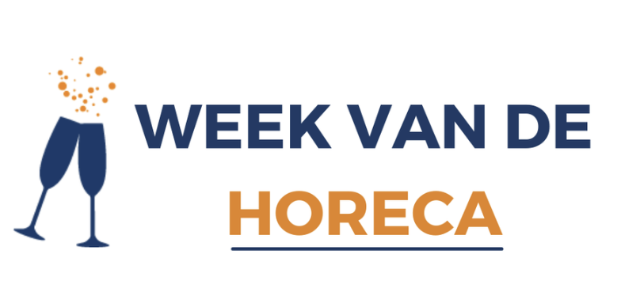
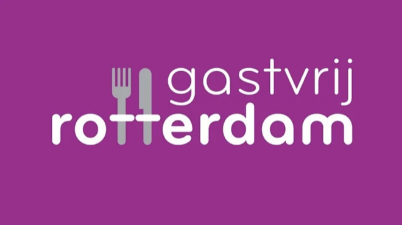

Nominierungsformular
Füllen Sie das Formular aus — Ihre Einreichung landet direkt bei uns.
Danke für Ihre Nominierung!
Wir haben Ihre Einreichung erhalten. Das Expertengremium prüft alle Nominierungen sorgfältig.
Füllen Sie das Formular aus — Ihre Einreichung landet direkt bei uns.
Wir haben Ihre Einreichung erhalten. Das Expertengremium prüft alle Nominierungen sorgfältig.
Jeder, der in oder für den Gastronomie-Sektor aktiv ist, kommt in Frage. Zum Beispiel:
Es geht nicht um Bekanntheit, sondern um Wirkung. Jemand, der wirklich einen Unterschied macht.
Ein unabhängiges Expertengremium bewertet Nominierungen nach:
Hinweis: Es geht darum, was jemand jetzt für das Handwerk bedeutet. Nicht um Berufsbezeichnung oder Vergangenheit.
Wenn Ihre Kandidatin oder Ihr Kandidat ausgewählt wird:
Die CuliQuiz Top 100 ist eine Initiative von:


Folgen Sie CuliQuiz und verpassen Sie die Bekanntmachung nicht.